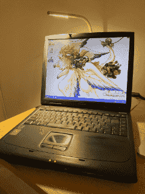

My Primary Computers
Practically a ripoff from Ken Silverman's website. My main computers over time.
-
Before 2005: AST 386SX/20
-
Before 2005: Intel Pentium I
-
2005: Custom Built Desktop - AMD Sempron 3000+ (probably)
-
2009: Bangho Fit H10 Netbook - Intel® Atom N270
-
2012: Samsung NP300V4A Laptop - AMD A6
-
2016: Custom Built Desktop - AMD FX 6300 (8GB → 16GB)
-
2019: Dell Laptop (I don't remember the model) - Intel i5
-
2021: Macbook Pro (2019) - Intel i9 (32GB)
-
2022: Macbook Air (2017) - Intel i5 (8GB)
-
2023: Macbook Air (2022) - Apple M2 (8GB)
-
2025: Macbook Air (2025) - Apple M4 (24GB)